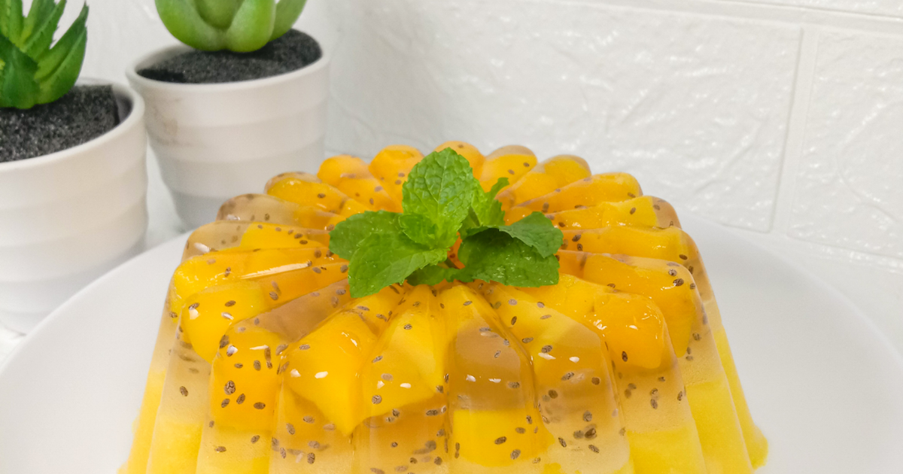

Resep puding Mangga Chiaseed

Bahan-Bahan:
- 1 buah Mangga
- 700 ml Air
- 1 Bks Pudding Susu Nutrijel
- 1 Bks Nutrijel biru plain
- 1 Sdm Chiaseed
- 5 Sdm Gula Putih
Langkah-Langkah:
- Langkah 1 :
- Pertama, kupas mangga potong dadu dan pisahkan sebagian untuk topping dan sebagian lagi untuk di jus
- Langkah 2 :
- Untuk lapisan pertama, siapkan panci, masukkan ½ bungkus nutrijel, 5 Sdm Gula Putih, 300ml Air putih
- Langkah 3 :
- Aduk rata, kemudian nyalakan Api
- Langkah 4 :
- Aduk dan Rebus sampai panas saja, jangan mendidih
- Langkah 5 :
- Kemudian matikan api, dan masukkan Chiaseed yang telah direndam sedikit air
- Langkah 6 :
- Aduk rata, kemudian tata potongan buah mangga kedalam cetakan yang sudah dibasahi air sebelum nya, supaya proses melepas dari cetakannya lebih mudah. (Tips)
- Langkah 7 :
- Tuang jelly perlahan, buah mangga nya jangan sampai terendam semua ya atau bila perlu tambah kan lagi buah nya, fungsinya sebagai perekat antara lapisan pertama dan lapisan kedua. Ini tips supaya lapisan pertama bisa set/beku keras terlebih dahulu agar saat ditimpa puding kedua tidak jebol lapisannya. (Tips)
- Langkah 8 :
- Sambil menunggu lapisan pertama set/keras. Siapkan lapisan kedua.
- Langkah 9 :
- Blender mangga dengan 200ml air, bila mangga nya asam. Bisa ditambah gula putih secukupnya.
- Langkah 10 :
- Kemudian siapkan panci, masukan pudding susu Nutrijel, jus mangga dan Air 200ml. Aduk rata kemudian nyalakan api
- Langkah 11 :
- Rebus sampai panas, tidak perlu terlalu mendidih.
- Langkah 12 :
- Cek lapisan pertama, jika sudah cukup keras. Tuang lapisan kedua perlahan jika perlu saat menuang dialasi sendok supaya jatuhnya sangat perlahan dan tidak merusak lapisan pertama
- Langkah 13 :
- Kemudian simpan sampai dingin, setelah dingin masukkan kedalam kulkas kurang lebih 1jam. Baru dihidangkan.